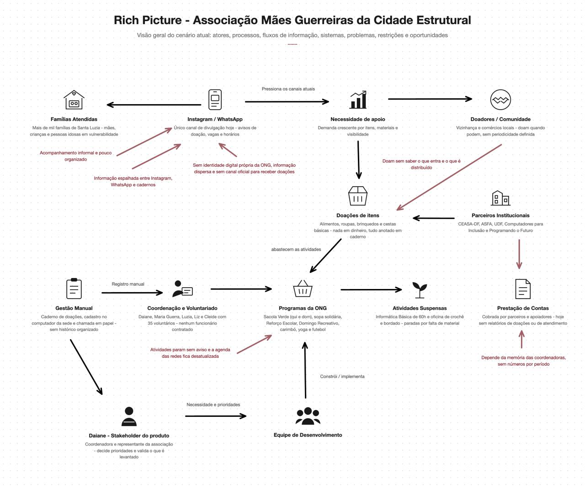

1. Cenário Atual do Cliente e do Negócio¶
Esta seção apresenta o cliente do projeto (a Associação Mães Guerreiras da Cidade Estrutural), o contexto em que ela atua, seu cenário atual de trabalho manual, a oportunidade identificada, os desafios do projeto, o mapa de stakeholders e a segmentação dos usuários da futura plataforma.
1.1 Identificação do Cliente/Parceiro¶
- Nome: Associação Mães Guerreiras da Cidade Estrutural
- Tipo: Associação comunitária sem fins lucrativos, mantida integralmente por trabalho voluntário.
- Representante: Daiane, coordenadora da associação, responsável por definir prioridades e validar as entregas do projeto.
- Outros contatos: Makio Augusto Cândido, voluntário e principal ponte entre a equipe e a associação, responsável por receber e avaliar as entregas antes de levá-las à coordenação; Maria Guerra (presidente); e as coordenadoras Luzia, Liz e Cleide.
- Forma de contato: Telefone, WhatsApp e Instagram institucional (@maesguerreiras_df).
- Vínculo com o projeto: Cliente real e parte interessada principal, responsável por fornecer informações sobre a operação da associação, validar as decisões do projeto e avaliar as entregas ao longo do desenvolvimento.
1.2 Introdução ao Negócio e Contexto¶
A Associação Mães Guerreiras da Cidade Estrutural nasceu em 2019 da mobilização de mães em situação de vulnerabilidade da comunidade de Santa Luzia, na Cidade Estrutural (DF), região marcada pela ausência de saneamento básico, água potável e infraestrutura urbana. A associação é mantida por cerca de 35 voluntárias e voluntários (não há funcionários contratados) e é conduzida por uma presidente, Maria Guerra, e por um grupo de coordenadoras responsáveis pelas diferentes frentes de atuação. A associação atua praticamente de domingo a domingo, com ações organizadas em quatro eixos: educação e capacitação, segurança alimentar, convivência e bem-estar, e geração de renda. Na doação de alimentos, já foram atendidas mais de mil famílias da comunidade.
Educação e capacitação¶
- Reforço Escolar: Às terças e sextas-feiras, das 8h30 às 10h30 e das 14h30 às 16h30, em Português e Matemática, para alunos do Ensino Fundamental e Médio.
- Informática Básica: Curso gratuito de 60 horas com emissão de certificado, realizado no laboratório de informática mantido em parceria com os programas Computadores para Inclusão e Programando o Futuro (Ministério das Comunicações). Está temporariamente suspenso, aguardando a organização do segundo andar da sede.
Segurança alimentar¶
- Sacola Verde (entrega de verduras): Às quintas-feiras e aos domingos, das 14h30 às 15h30, com apoio da CEASA-DF. O atendimento é organizado por ordem de chegada, com entrega de senhas.
- Doação de sopa e cozinha solidária: Às quartas-feiras, com apoio da ASFA, voltada a pessoas em situação de vulnerabilidade.
- Doação de mantimentos e cestas básicas: Cestas básicas, frangos, peixes e pães, distribuídos ocasionalmente e avisados no grupo de WhatsApp. Como não há doadores fixos, não existe data definida para as distribuições.
Convivência, cultura e bem-estar¶
- Domingo Recreativo: Realizado em dois domingos por mês, reúne em média 80 crianças, com futebol, pintura, café da manhã e almoço. Para alcançar mais crianças, a associação faz um rodízio mensal entre os grupos. Sua realização depende do recebimento de doações.
- Futebol: Aos domingos pela manhã, voltado ao desenvolvimento físico e ao trabalho em equipe. É a única atividade que não é divulgada nas redes sociais.
- Carimbó: Grupo de voluntárias que ensaia uma vez por semana e se apresenta quando a associação é convidada e dispõe de recursos para participar.
- Yoga e Hitbox: Yoga às segundas-feiras e hitbox às quartas-feiras, das 9h às 10h, voltados à saúde e ao bem-estar das mulheres da comunidade.
- Roda de Conversa com psicólogo: Aos sábados, das 15h às 16h, conduzida por estudantes de Psicologia da UDF, com foco em escuta e acolhimento das mães.
- Oficinas com mulheres e atividades com idosos: Encontros de aprendizado, convivência e valorização das pessoas idosas da comunidade.
Geração de renda¶
- Crochê e bordado: Oficina voltada à autoestima e à geração de renda extra das mães. Está temporariamente suspensa, aguardando equipamentos ou recursos para a compra de materiais.
Como a associação se organiza hoje¶
Toda a gestão é feita de forma manual. As doações recebidas são anotadas em cadernos e, por falta de tempo e de organização, nem sempre chegam a ser registradas. O cadastro das famílias é mantido em um computador da sede, com nome, idade, endereço e telefone, e o acompanhamento da participação também acontece pelo grupo das mães no WhatsApp. A chamada das crianças é feita à mão, em papel.
A comunicação interna acontece por reuniões presenciais e grupos de WhatsApp, e a divulgação para a comunidade é feita pelo Instagram (@maesguerreiras_df), pelo Facebook, por panfletos e por cartões de divulgação. A associação conta ainda com parceiros institucionais como CEASA-DF, ASFA, UDF e os programas federais Computadores para Inclusão e Programando o Futuro.
1.3 Rich Picture¶

1.4 Identificação da Oportunidade ou Problema¶
A associação tem uma operação consolidada, parceiros institucionais reconhecidos e alcance real na comunidade, mas toda a sua gestão depende de registros manuais que se perdem. Isso gera problemas concretos:
- As doações de itens (alimentos, roupas, brinquedos e cestas básicas) são anotadas em cadernos e, por falta de tempo, nem sempre são registradas: parte do que entra e do que é distribuído simplesmente não fica documentado;
- Não existe nenhum relatório organizado: a associação não sabe dizer com precisão quanto recebeu por mês, por campanha, quantas doações chegaram nem quais tipos de itens foram distribuídos;
- Sem esses números, a prestação de contas a parceiros como CEASA-DF, ASFA e UDF depende da memória das coordenadoras, e a associação perde argumentos concretos para conquistar novos apoiadores e patrocinadores;
- O cadastro das famílias existe em um computador da sede, mas não se conecta ao controle de presença nem ao registro das doações distribuídas;
- A chamada das crianças no Reforço Escolar, no futebol e no Domingo Recreativo é feita em papel, e a regra de liberar a vaga após cinco faltas sem justificativa depende de conferência manual;
- O atendimento da Sacola Verde é organizado por ordem de chegada com entrega de senhas, sem registro de quem foi atendido em cada distribuição;
- A comunidade não tem onde consultar o que está ativo: atividades suspensas (Informática Básica e Crochê e Bordado) e atividades que dependem de doação (Domingo Recreativo) se misturam às demais nas redes sociais;
- Informações institucionais dependem de Stories e destaques do Instagram, de panfletos e de cartões, e as vagas em novas turmas são divulgadas apenas nos grupos de WhatsApp, alcançando quem já está próximo da associação.
1.5 Desafios do Projeto¶
- A coordenação tem baixa familiaridade com ferramentas digitais além do WhatsApp e das redes sociais: se o registro de uma doação não for mais rápido que anotar no caderno, a ferramenta não será adotada;
- São cinco coordenadoras com responsabilidades diferentes, o que exige controle de acesso por perfil em vez de um único login compartilhado;
- O sistema tratará dados pessoais de famílias em situação de vulnerabilidade (nome, idade, endereço e telefone), o que exige cuidado com privacidade e conformidade com a LGPD;
- O projeto é conduzido em regime pro bono, sem orçamento, o que restringe hospedagem, domínio e demais serviços às alternativas gratuitas;
- A associação tem muitas frentes e um calendário semanal cheio, e a disponibilidade das voluntárias para validar entregas é limitada: as validações precisam ser curtas;
- O escopo levantado é ambicioso para um semestre, sendo necessário priorizar rigorosamente o que entra no MVP.
1.6 Mapa de Stakeholders¶
Os principais stakeholders do projeto são: Daiane, coordenadora e representante do cliente, responsável por definir prioridades e validar as entregas; Maria Guerra, presidente da associação, responsável institucional pela organização; as demais coordenadoras (Luzia, Liz e Cleide), que utilizarão o painel administrativo no dia a dia e precisarão de acessos compatíveis com suas responsabilidades; as cerca de 35 voluntárias e voluntários que conduzem as atividades; as famílias beneficiárias, impactadas pelo cadastro, pelas inscrições e pela organização do atendimento; os doadores de itens, que precisam saber o que a associação precisa e como entregar; os parceiros institucionais (CEASA-DF, ASFA, UDF e os programas federais Computadores para Inclusão e Programando o Futuro), destinatários da prestação de contas; e a equipe de desenvolvimento, responsável por construir a solução, garantir sua simplicidade de uso e a proteção dos dados.
A seguir, é apresentado um quadro resumo dos stakeholders.
| Stakeholder | Relação com a solução | Interesse principal | Influência |
|---|---|---|---|
| Daiane (coordenação) | Representante do cliente | Garantir que a solução represente a associação e apoie a captação de parcerias | Alta |
| Makio Augusto Cândido | Voluntário principal que faz a ponte de comunicação da equipe com a associação | Validar escopo, prioridades e entregas do projeto | Alta |
| Demais coordenadoras (Luzia, Liz e Cleide) | Usuárias internas do painel administrativo | Registrar doações, cadastros e presença de forma rápida, com acesso conforme sua responsabilidade | Alta |
| Voluntárias e voluntários (cerca de 35) | Usuários internos e apoiadores das atividades | Saber onde ajudar e registrar as atividades que conduzem | Média |
| Famílias beneficiárias | Impactadas pela solução | Saber o que está ativo, como participar e ser atendidas com organização | Média |
| Doadores de itens (pessoas e comércios) | Usuários externos | Doar de forma simples e ver o destino das doações | Média |
| Parceiros institucionais (CEASA-DF, ASFA, UDF, Programando o Futuro) | Apoiadores e destinatários da prestação de contas | Acompanhar o impacto do apoio concedido | Alta |
| Equipe de desenvolvimento | Responsável pela construção do produto | Entregar uma solução viável, simples de usar e de qualidade | Alta |
1.7 Segmentação de "Clientes" (usuários da plataforma)¶
- Coordenação da associação: As cinco coordenadoras que registram doações, cadastros e presença, com necessidades de acesso distintas conforme sua responsabilidade;
- Voluntárias e voluntários: Cerca de 35 pessoas que conduzem as atividades e precisam saber onde e quando ajudar;
- Famílias beneficiárias: Moradoras de Santa Luzia que participam das atividades e recebem doações, incluindo mães, crianças e pessoas idosas;
- Doadores de itens: Pessoas da comunidade, comércios e apoiadores que doam alimentos, roupas, brinquedos e mantimentos;
- Parceiros institucionais e potenciais patrocinadores: Organizações como CEASA-DF, ASFA e UDF, que apoiam a associação e precisam acompanhar o impacto do apoio concedido.